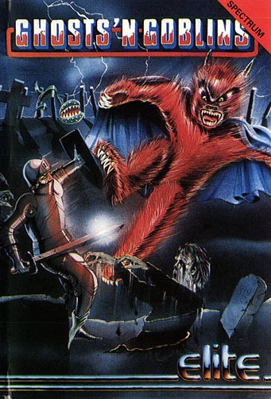
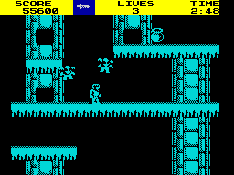
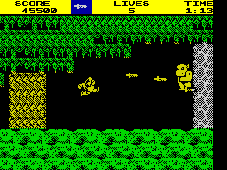

Ghosts 'N Goblins


{kind=link}

| Publisher: | Elite Systems |
| Price: | £8.95 |
| Year: | 1986 |
| Source: | CRASH, Issue 30 |

A brave knight is just about to propose to his dusky-eyed maiden when out of a dark sky swoops a huge salivating demon. Before the knight can so much as re-buckle his armour, the horrible monster seizes the knight’s beloved and sweeps her off to its foul lair.
Thankfully the scene of this Capcom arcade conversion is set in days of old when knights were bold, so the love-lorn hero sets out on a quest, a quest to rescue his damsel. Scampering across a scrolling landscape, he must make his way to the demon king’s murky lair. Our hero really has his work cut out for him — the path to the demon king’s abode is filled with nasties who are all determined to end the knight’s mission of mercy prematurely. To make things even more tricky, each section of the game has to be completed within a time limit.

platform, taking advantage of the lifts,
our medieval hero does his best to get
through the blue landscape of the Ice
Palace
The knight starts out, resplendent in shiny armour as he scuttles towards the demon king’s lair and a romantic reunion. Contact with the monsters in the game results in the knight losing something vital. After his first encounter with a nasty, he is so shocked that his tin suit falls off and he is left scampering around in his undies. Following the second clash he loses a life and his skeleton crumples to the ground. The knight is provided with nine lives, and each time a life is lost he is returned to the start of the current segment of the game.
In the first zone, the gallant knight battles through a graveyard filled with zombies crawling out of the tombs, arms out-stretched to meet him. Unfortunately they’re not going to give our hero a sloppy kiss on the cheek. Killing him is more what they have in mind. Apart from the zombies patrolling around the graveyard a number of other nasty creatures hinder his progress. Kamikaze owls swoop down from great heights, and carnivorous plants shoot gobs of acidic digestive juice at the chivalrous crusader.
The knight is not totally defenceless. At the start of the game he is provided with a weapon. This can either be a lance, a sword or a magic fireball — all activated by a press of the fire button. Some weapons are more effective than others: the fire bombs are lobbed into the air and careful timing is needed to dispose of nasties, while the fire button sends out a stream of daggers at gizzard height if the hero is equipped with the little knife. Points are collected for each nasty killed. Some of the Demon King’s minions carry weapons, and when they are killed the knight’s weapon changes automatically — care is needed if you are to avoid being lumbered with a weapon you don’t want.
Once the knight has managed to get through the perils in the graveyard, there’s a rather large overweight demon to destroy. The larger characters in the game take several hits before they are killed. Once the demon is dead, the knight has to cross a lethal lake by using a raft. With or without his armour, the knight sinks without a trace into the lake’s murky depths if he misjudges the leap. Swimming is apparently not a skill taught on chivalry courses...

chappie looks well ’ard Can our hero
land enough blows to do the baddie in
and progress to the next level? Come
on Cam, jiggle that joystick
Through a dark wood, avoiding more diving owls and witch creatures, and it’s time for a showdown with an ogre, affectionately called Fatty Stomper by his friends. When the knight manages to blast him into little puffs of oxygen and ozone he gains the key to the Ice Palace and a new suit of armour if he happens to be in his undies at the time. This section of the game is played on a backdrop which scrolls in four directions, and the knight must leap from platform to platform killing evil goblins that look rather like winged teddy bears. They are far from cuddly, swooping down from great heights with murder on their minds. Fireball-spitting veggies also inhabit the Ice Palace, and bonus points can be collected by nabbing priceless treasures carried by some of the evil creatures. Mistiming a leap can be fatal — the Ice Palace is built above water, and knights can’t swim...
After the Ice Palace comes a ghost town, populated with all manner of weird and wonderful monsters that swoop out of shuttered windows and chase the questing knight. After the town the hero has to negotiate a platforms and ladders section — the Monsters’ Den populated by large and hardy demons that only die after a handful of hits.
A double dose of guardian demon has to be overcome at the end of the Den before access is gained to the final section of the game — the Cavern System. The mission is nearly over. Mr Knight’s beloved is within sight. Unfortunately, she is being guarded by a rather large Chinese dragon who doesn’t look very friendly at all. The knight is rather tired after his long and perilous journey. If he makes one last supreme effort, then his bride to be will be his for evermore and he can carry her over the threshold in true romantic style as befits a knight of the realm. Even if he is only wearing underpants.
CRITICISM
“Elite have come up with another arcade winner. Ghosts and Goblins is a genuine first rate copy of the arcade game. The thing that amazes me most about this game is the beautifully smooth scrolling — its strongest point and one that makes it amazingly playable. The graphics are very similar to those of Green Beret, and the problem of losing your man when he’s against a bit of background in the same colour is here too. Ghosts and Goblins still contains the addictiveness of the arcade game and the graphics are an almost perfect copy — bar colour of course. The only bad bit about it was the presentation which is limited to a very basic scoreboard and no sound to shout about. This is due to memory restrictions so I was told. Despite this, Elite have come up with another arcade classic.”
“I saw the arcade game all of a year ago and was predictably impressed. When I heard that Elite were to convert the game it caused much amusement, as we dismissed the deal as a triumph of marketing over the possible. Well, Keith Burkhill has proved my intuition well and truly and completely wrong and has gone and produced an excellent interpretation of the arcade original equipped with perfectly smooth scrolling and all the gamey bits that made the original Ghosts and Goblins so much fun to chuck ten pee bits into. Though a little bit hard at first it shouldn’t take long to get yourself into the Ice Castle, battling off the fatal advances of the flying killer teddy bears. All in all a really outstanding release from Elite despite the rubbish advert (you know the one, drawn in crayon by a juvenile) and represents unusual value for money.”
“Yippee!... What a game! It’s so compelling I have to fight through the Zzap! reviewers to get a game in! Although the conversion only contains three levels (the original was massive) there’s more than enough to keep you busy. Graphically, Ghosts and Goblins is certainly very good if not excellent: your man leaps around, runs and crouches — all nicely animated and very smoothly at that. The sound leaves a lot to be desired. I was terribly disappointed that there wasn’t a larger vocabulary of sound. This game is very good. It is compelling beyond belief and well worth the money. My only gripe is that it is let down a little by the boring front end and unoriginal Spectrum character set. Minor moans, though...”
COMMENTS
| Control keys: | Redefinable |
| Joystick: | Kempston, Cursor, Interface 2 |
| Keyboard play: | Responsive |
| Use of colour: | Your character can blend into the background, but neatly done nevertheless |
| Graphics: | Good animation; faithful to the original within the Spectrum’s limitations |
| Sound: | More of it would have gone down well |
| Skill levels: | One |
| Screens: | Scrolling playing area |
| General rating: | Yet another very competent Capcom conversion from Elite. Very playable and addictive. |
| Use of computer: | 89% |
| Graphics: | 92% |
| Playability: | 95% |
| Getting started: | 91% |
| Addictive qualities: | 96% |
| Value for money: | 93% |
| Overall: | 95% |